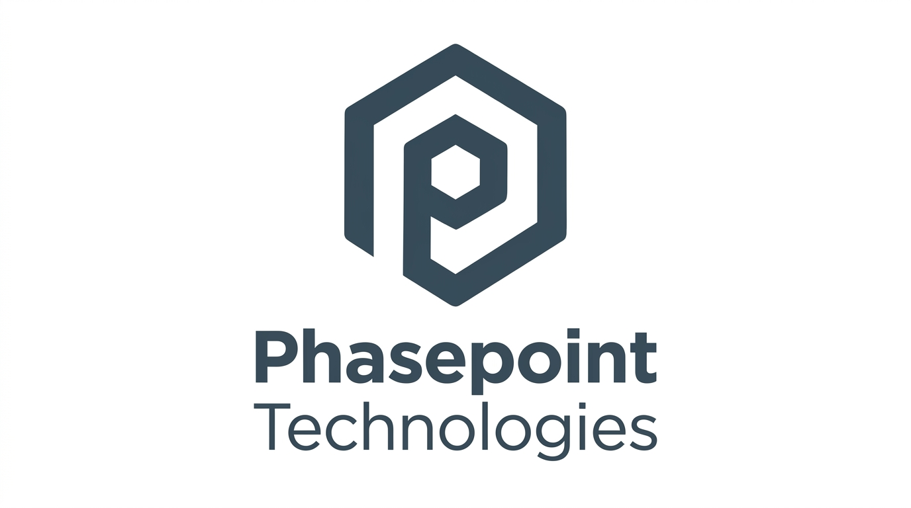
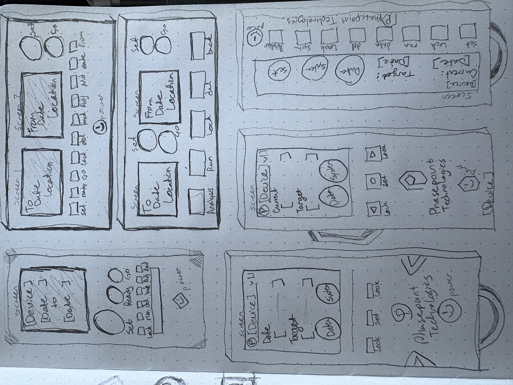
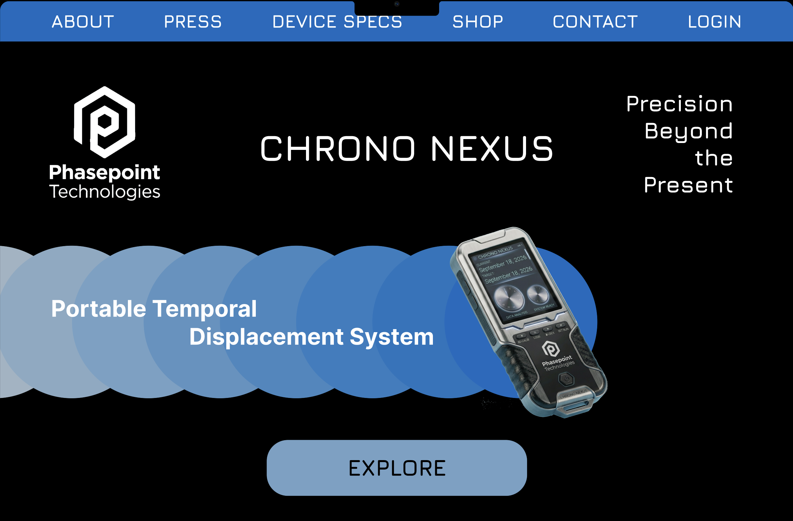
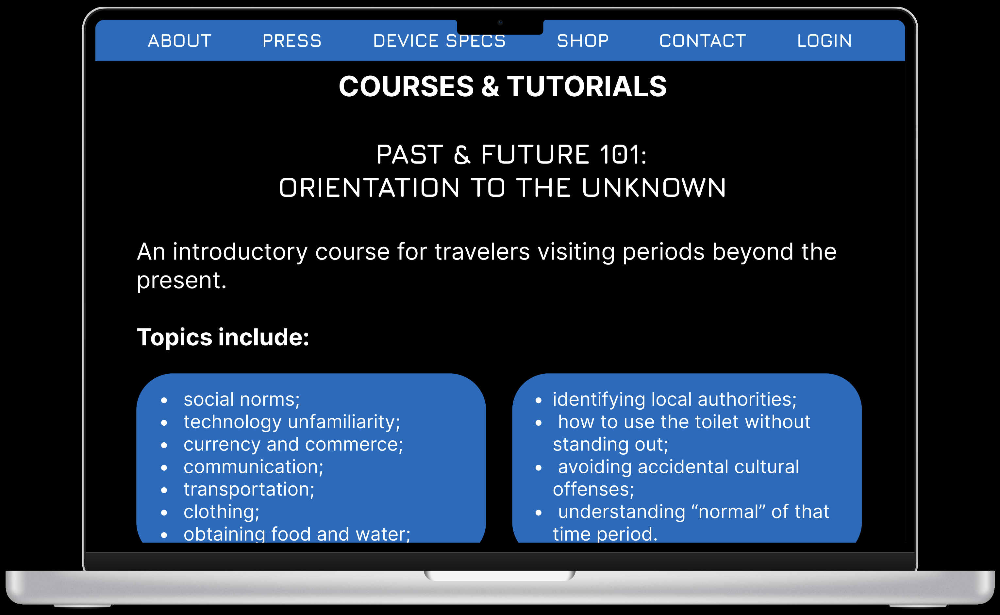
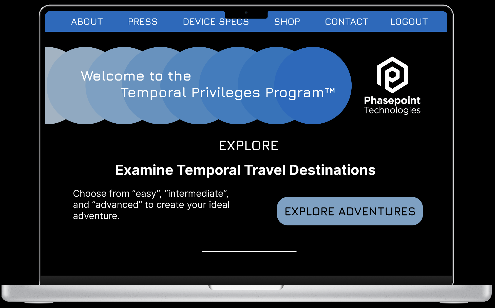
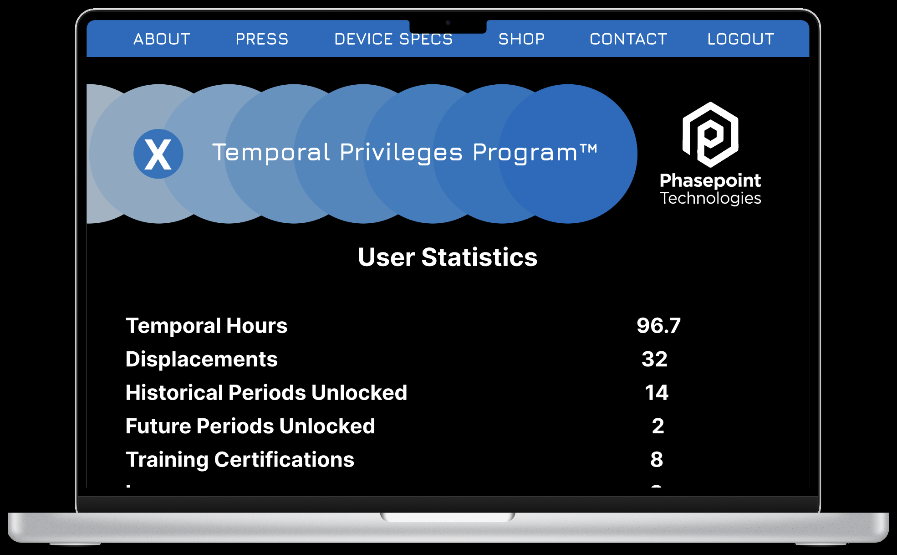
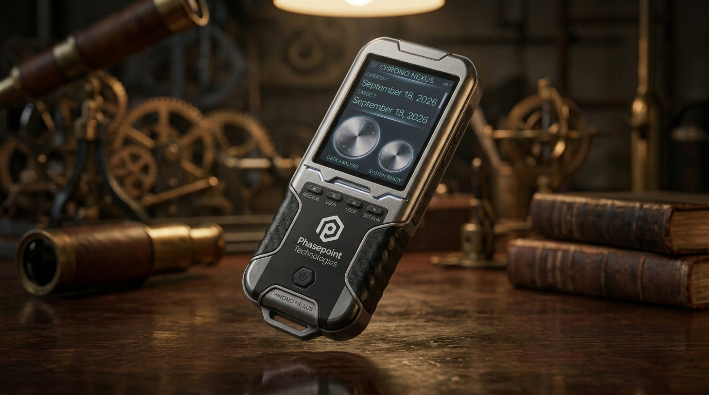

SOFTWARE
Figma
Adobe Photoshop
Adobe Firefly
MY ROLE
Product Designer-Independent Project
UI/UX Designer
Web Designer
DELIVERABLES
Brand Identity Development
Logo Design
Website Design
UI/UX Design
Interactive Prototyping
AI-Assisted Visual Development
TOOLS & CREDITS
Adobe Firefly AI-generated imagery
Envato Elements (licensed subscription assets & mockups)
PROJECT OVERVIEW
I designed a complete digital product ecosystem for Phasepoint Technologies, a fictional technology company whose flagship product enables controlled travel through time.
Phasepoint Technologies is a speculative technology brand created around the fictional Chrono Nexus, a portable temporal displacement system designed to make controlled travel through time possible.
THE PROBLEM
How do you design a digital experience for a technology that doesn't exist—and make it feel credible enough that someone could imagine actually using it?
- Information is fragmented. Travelers need product information, safety requirements, training, destinations, and policies in one place.
- Time travel introduces unfamiliar risks. Users need preparation for different cultures, environments, technologies, languages, and historical periods.
- The technology must feel trustworthy. An impossible product requires clear systems, constraints, documentation, and a believable user experience.
BEFORE THE CHRONO NEXUS
Humanity could study the past and predict the future—but it could not directly experience either.
- Historical research depended on incomplete records and artifacts.
- Future forecasting relied on projections and simulations.
- Researchers could observe evidence, but not events themselves.
- Travelers had no reliable way to navigate another point in time.
The Chrono Nexus was conceived to address this gap by providing controlled temporal displacement supported by navigation, environmental analysis, training, safety systems, and automated return protocols.
The project explores how an impossible technology could be presented as a credible, sophisticated consumer product. I developed the brand identity, product ecosystem, website, user experience, supporting content, and digital interface to create a cohesive experience that feels more like an established technology company than a traditional science-fiction concept.
The project includes product and device specifications, training programs, destination guides, pricing, press releases, traveler profiles, personal statistics, device settings, account settings, journal functionality, and a fully developed e-commerce experience.

Phasepoint Technologies logo and visual identity.

Chrono Nexus device early sketches.
THE CHALLENGE
How do you make an impossible technology feel believable?
The challenge was to create a digital experience for a fictional time-travel device without relying on familiar science-fiction conventions.
THE SOLUTION
Treat time travel like a legitimate technology product.
I approached Phasepoint as an established technology company and designed the experience around realistic product systems, user requirements, safety protocols, training, pricing, documentation, and customer support.
- Established a complete brand identity
- Designed the Chrono Nexus product ecosystem
- Created user journeys for prospective and returning travelers
- Developed training and destination systems
- Designed account, device, and traveler settings
- Built a cohesive responsive digital prototype
PROJECT APPROACH
RESEARCH & DISCOVERY
- Defined the fictional technology and its limitations
- Identified prospective and returning traveler needs
- Established safety, training, and navigation requirements
- Developed the information architecture
- Defined user journeys and content hierarchy
PROCESS
- Brand and visual identity development
- UX architecture and user flows
- Wireframing and interface design
- Content and system development
- Interactive prototyping
- Iterative refinement of layout, navigation, and interaction
RESULTS
- Complete Phasepoint Technologies brand identity
- Fully developed Chrono Nexus product ecosystem
- Responsive interactive digital prototype
- Integrated traveler, training, destination, and account experiences
- Consistent UX/UI system across the product experience
CREATIVE DIRECTION
I intentionally presented an impossible technology with the visual language of a credible, established technology company.
The creative direction was intentionally restrained, professional, and technology-focused. Rather than relying on conventional science-fiction visual language, I treated Phasepoint Technologies as though it were an established company developing a sophisticated piece of precision equipment.
A dark interface, controlled blue color palette, geometric forms, clean typography, and structured information hierarchy create a visual language inspired by aerospace, advanced technology, and scientific instrumentation. The circular graphic system references both temporal movement and the layered nature of the timeline while providing a consistent visual element throughout the site.
The fictional premise is intentionally presented with a straight face. Dry humor is incorporated primarily through product descriptions, policies, training materials, press releases, and corporate messaging, allowing the absurdity of the technology to emerge through otherwise credible communication.
PROCESS
I built the experience as a complete product ecosystem rather than designing a collection of individual web pages.
I began by defining the Phasepoint Technologies brand, its product ecosystem, and the rules governing the fictional technology. Establishing these parameters early allowed me to design the website as a complete product experience rather than a collection of individual pages.
From there, I developed the information architecture and user journeys around several distinct audiences, including prospective customers, trained travelers, researchers, and returning users. I designed the interface and content to support those different needs while maintaining a consistent visual system across the site.
The project evolved through iterative exploration of layout, typography, navigation, product presentation, content structure, and interaction design. I also developed the supporting copy, policies, training curriculum, destination system, pricing structure, traveler statistics, and device settings to make the fictional product ecosystem feel cohesive and believable.
The final prototype brings those elements together into a responsive digital experience that demonstrates both the visual identity and the functionality of the proposed product.
UX APPROACH
The UX was structured around the needs of both prospective customers and returning travelers.
- Discover — Learn about the Chrono Nexus, technology, pricing, and safety.
- Prepare — Complete training, review destinations, learn relevant languages, and understand requirements.
- Plan — Explore destinations, review conditions, and prepare for travel.
- Travel — Use the Chrono Nexus and its safety and return systems.
- Manage — Review travel history, statistics, device settings, and account preferences.
Chrono Nexus Logo Sketches.
THE DIGITAL EXPERIENCE

View Interactive PrototypeExplore the Chrono Nexus digital experience from the perspective of a prospective and returning traveler. This walkthrough highlights the website, product ecosystem, destination and training systems, traveler dashboard, and personalized device and account settings developed to support the complete user experience.

Courses & Tutorials page showing content structure.

The design approach focused on creating an intuitive learning experience through clear content hierarchy, supporting imagery, and repeatable page structures.">Temporal Privileges Program page showing membership options.

Membership Statistics page.

Chrono Nexus temporal travel device mockup.
Why wait for the future? Let's build something great now.
CONTACT ME